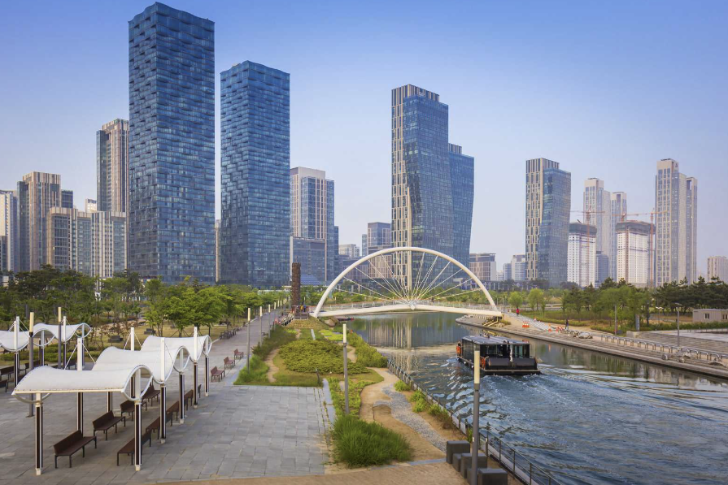
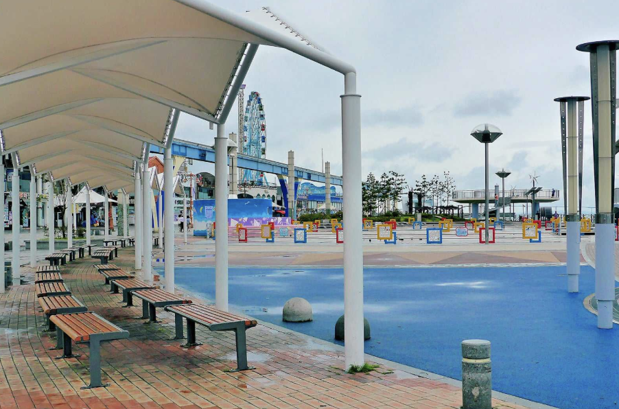
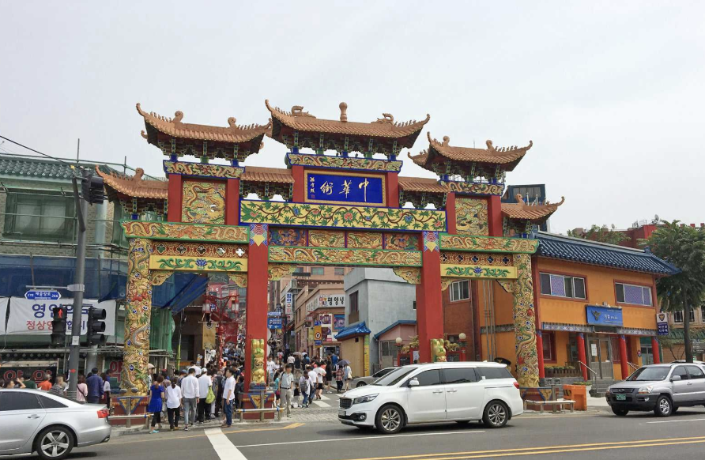
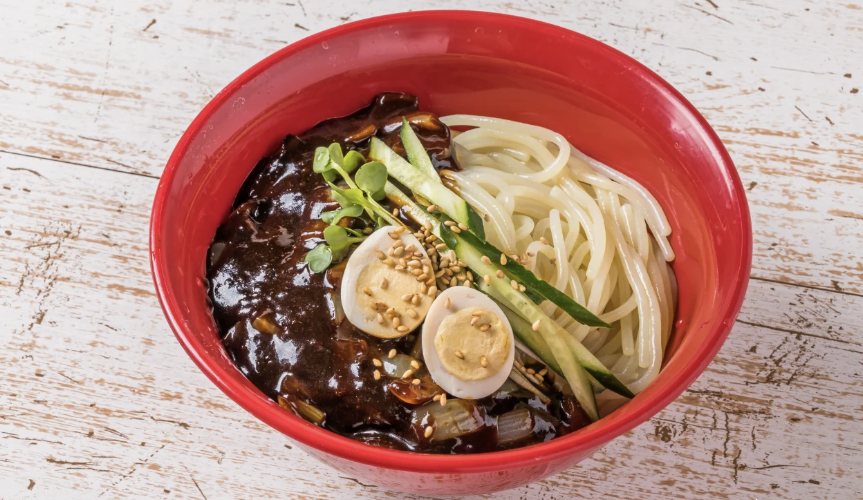
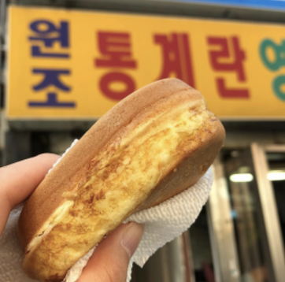

1. 인천에 대하여

대한민국 북서부에 위치한 인천은 항구가 없는 서울특별시를 대신해 항구를 맡고 있는 도시이다. 또한 인천국제공항의 존재로 배와 비행기가 다니는 우리나라 가장 큰 도시이다. 역사의 굵직한 사건들도 많이 일어났던 인천은 빠르게 광역시로 승격되었다. 기계, 중화학, 반도체, 로봇 등 첨단 사업을 아우르는 산업도시지만, 관광에도 힘을 쏟고 있다. 젊은 층의 비중이 계속해서 늘어가고 있고, 수도권 중에서도 유일하게 인구가 느는 도시라고 한다.
2. 인천 여행
인천은 수도권 바로 아래에 있어 비교적 가깝다. 지하철도 인천까지 운행하는 지하철이 많다. (1호선, 공항철도역) 자가용을 이용하면 1시간도 안걸리기 때문에 서울에서 출퇴근을 하는 사람들도 많을 것이다. 하지만 서울이 아닌 다른 곳에서 오려면 좀 힘들다. 북서쪽 끝에 위치하고 있으며 직행 기차도 없기 때문이다. 그러나 인천공항을 가는 것이 목적이라면 인천공항 직행 버스가 운행되고 있기 때문에 이 부분을 잘 활용하면 좋다.
3. 인천 가봐야 하는곳
1. 송도 센트럴파크
송도는 비교적 최근에 만들어진 신도시이다. 지하철 역도 있어 접근이 용이하다. 이국적 풍경과 야경이 유명한 이 공원은 1.8km의 해수로가 있어 카누, 보트 등의 물놀이가 가능하고 산책정원, 테라스 정원 등 잘 꾸며진 정원과 자전거 길이 있다. 고층빌딩, 해수로, 뛰어다니는 아이들, 멋진 야경, 낮게 나는 비행기 이 모든게 합쳐져 그림 같은 풍경을 연출한다. 근처 G 타워 무료 전망대에서 서해와 인천을 한눈에 볼 수 있다.
2. 월미도
인천을 대표하는 관광지이다. 러일전쟁, 인천상륙작전 등 역사적 사건이 많았던 이곳은 이제 아름다운 관광지로 거듭났다. 바다가 한 눈에 보이는 문화의 거리에는 디스코팡팡으로 유명한 놀이공원과 횟집, 카페가 있고 주말에는 다양한 공연이 눈을 즐겁게 한다. 전통 정원은 일행과 한가롭게 산책하거나 체험하기 좋은 장소이다.
3. 차이나타운
인천에는 중국이 있다 ?! 작은 중국이라고 불리는 차이나타운은 조선시대 개항 이후부터 자리잡은 거리이다. 120년이 넘게 외교 문화와 풍습을 유지해온 이곳은 중국풍의 거리와 삼국지 벽화, 자장면 박물관 등이 존재한다. 짬뽕, 자장면, 월병, 물만두 등의 중국음식은 관광객의 배를 기름지게 해준다. 이 근처에 있는 송월동 동화마을은 아이들과 함께 방문해 같이 동심의 세계로 돌아갈 수 있는 곳이다.
4. 인천의 먹거리
1. 자장면
100년의 역사동안 국민들에게 쭉 사랑받아온 자장면은 인천에서 시작됐다. 개항 이후 중국인들이 모여들었고, 이때 중국식 자장면도 인천에 들어오게 되었다. 그 이후 우리나라 사람들 입맛에 맞게 야채를 볶아서 넣고 단맛을 강하게 한 한국식 자장면이 탄생하게 된 것이다. 수많은 맛집이 거리에 늘어져 있기 때문에 아무 곳이나 들어가도 맛있다고 한다. 가족들과 자장면을 먹으며 어릴 적 추억을 떠올려보는 것은 어떨까.
2. 쫄면
1970년대 초 인천에 위치한 냉면 공장에서 실수로 일반 냉면보다 더 굵은 면발을 뽑아내는 실수를 저질렀고, 그냥 버리기 아까워 근처 분식점에 가져다 주었다. 이 분식점에서 굵고 쫄깃한 면에 고추장 양념을 비벼 만들어 팔게 된 것이 쫄면의 시초이다. 쫄면을 우리에게 대중화한 '신포 우리 만두'도 인천에서 시작된 가게이다. 실수로 만들어진 별미, 쫄면은 그냥 먹어도 맛있고 만두와 함께 먹어도 맛있다.
3. 계란빵
다음은 후식이다. 우리가 지하철이나 빵집에 가면 쉽게 접할 수 있는 계란빵도 인천에서 시작되었는데, 인하대 후문에 위치한 빵집에서 풀빵을 팔다가 학생들이 팥을 싫어한다는 이야기를 듣고 팥 대신 계란을 넣어 만든 것이 시작이라고 한다. 단짠단짠의 조화가 훌륭하고 원조 집은 가격도 착해 아직도 많은 사랑을 받고 있는 음식이다. 선물용으로도 좋으니 계란빵을 사러 가보는 것이 어떤가?